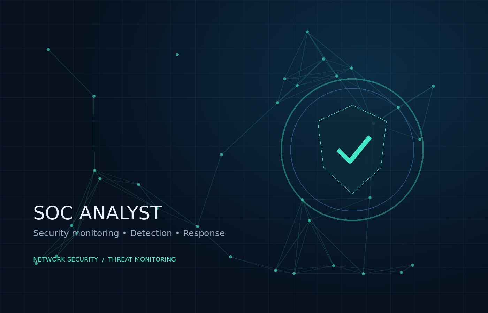
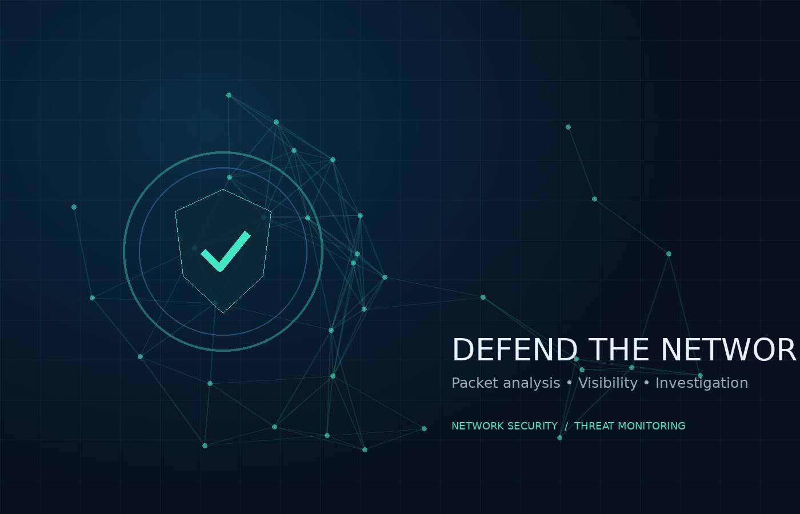

SIEM Fundamentals
Wazuh · Security event monitoring
> cat career_goal.txt
CYBERSECURITY · BLUE TEAM
MCA student at Centurion University of Technology and Management (CUTM), focused on building a career in Security Operations Center (SOC). Interested in network monitoring, intrusion detection, log analysis and digital forensics, with practical experience using cybersecurity tools and lab environments.


WHO I AM
I'm Akash Jena, an MCA student at Centurion University of Technology and Management (CUTM), Bhubaneswar. I am preparing for an entry-level SOC Analyst role and strengthening my practical knowledge of network security, threat detection and defensive security.
MCA, CUTM (2025–2027) │ BCA, Berhampur University (2022–2025)
TECHNICAL TOOLKIT
Tools and technologies for cybersecurity and SOC learning.
Wazuh · Security event monitoring
Snort · Nmap · Wireshark
TCP/IP · DNS · HTTP/HTTPS · Packet analysis
YARA · Scapy · Kali Linux
Python · Java · C
Linux · Windows · SQLite · MySQL
MY WORK
A practical project focused on network discovery and vulnerability visibility.
Starting network scan...
Host discovery: complete
TCP/UDP ports: analysed
Service detection: done
Results saved to database
SCAN COMPLETE ✓
A Python-based system for scanning networks, discovering active hosts, identifying open ports and services, and presenting scan results through an interactive dashboard.
HANDS-ON LEARNING
Areas of practical study and tool familiarisation.
View my profile, hands-on learning activity and lab progress.
Visit Profile ↗Packet inspection and traffic analysis with Wireshark.
Understanding Snort rules, alerts and intrusion detection concepts.
Learning security event monitoring and log investigation fundamentals.
Using Nmap in authorised lab environments to identify hosts and services.
LEARNING & CERTIFICATIONS
Certificates and cybersecurity coursework.
Elite Certificate · 2026
Score: 61%Course completion certificate
CompletedCybersecurity Coursework
GET IN TOUCH
Open to learning opportunities, cybersecurity collaboration and entry-level SOC opportunities.